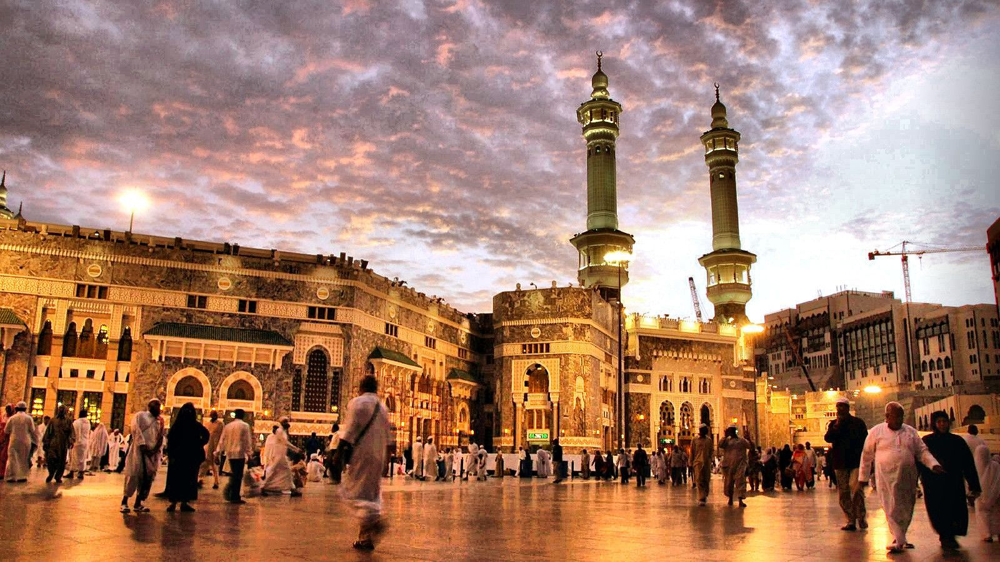

Hyderabad's Mecca Masjid

Facts about Hyderabad's Mecca Masjid :
- Construction of Hyderabad's Mecca Masjid, one of the world's largest mosques-and one of the oldest in India-began in 1614 during Mohammed Quli Qutub Shah's reign and took almost 80 years to complete.
- Large enough to accommodate 10,000 worshipers.
- This beautiful mosque's 15 enormous arches and pillars were each wrought from single slabs of black granite dragged to the site by huge cattle trains reputedly consisting of up to 1,400 bulls.
- Taking its name from the bricks above the central gate that were brought here from Mecca, this impressive complex features highlights such as its main gateway, huge plaza, a large manmade pond, and a room that houses the hair of Prophet Mohammed.
- Other notable features include inscriptions from the Quran above many of the arches and doors, the exquisite roof of the main hall, the cornices around the entire mosque structure, and the floral motifs and friezes over the arches.